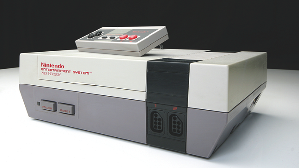
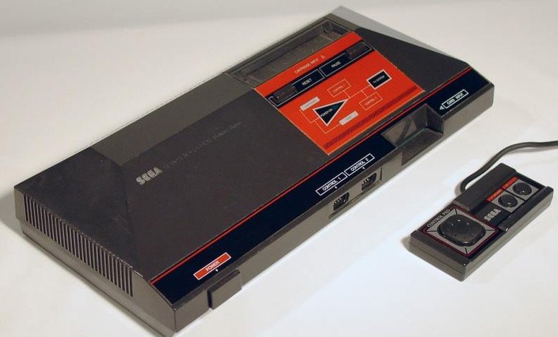
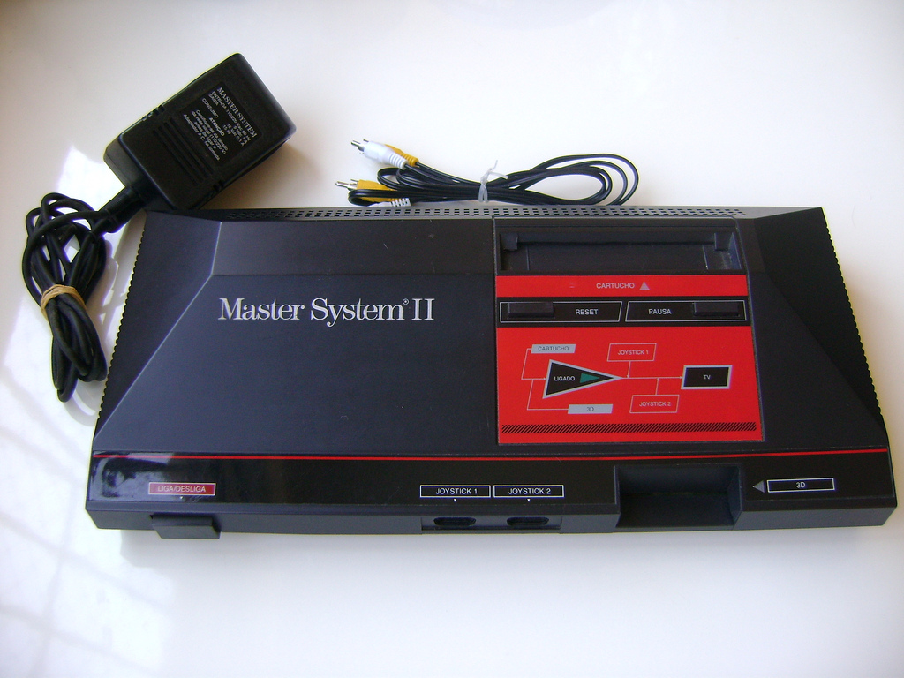
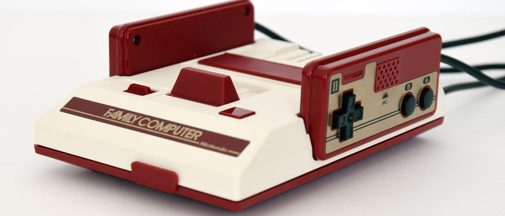
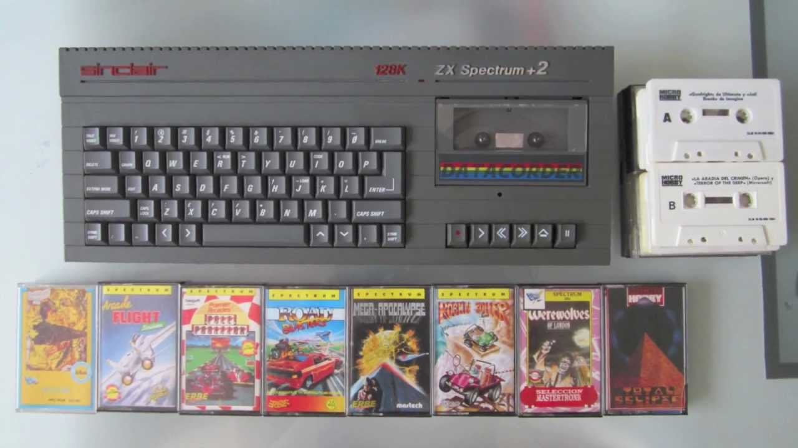
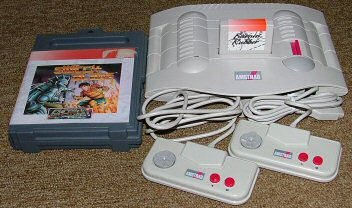

Nintendo Entertainment System
- Fabricante: Nintendo
- Procesador: Ricoh 2A03 8-bit processor (MOS Technology 6502).
- Formato: Cartuchos.
- Puertos: 2 mandos.
- Librería de juegos: Unos 800.
- Precio Original: El precio recomendado a finales de los 80 era de 30.000 pesetas (180€).
- Ventas: 62 millones de consolas en todo el mundo. Aproximadamente 20 corresponden a Japón,
34 a EEUU y unas 8 en las regiones PAL.
Master System I
- Fabricante: SEGA
- Procesador: 8-bit Zilog Z80 at 3.58 MHz.
- Formato: Cartuchos y Tarjetas.
- Puertos: 2 mandos.
- Librería de juegos: 318.
- Precio Original: El precio recomendado a finales de los 80 era de 20.000 pesetas (120€).
- Ventas: 13 millones de consolas en todo el mundo. Curiosamente, 7 de ellas, en Europa, y
2, en Brazil. Del resto, sólo 1 en Japón y 2 en EEUU.


Master System II
- Fabricante: Sega
- CPU: Zilog Z80 (NEC D780C, Zilog Z80A o Zilog Z084004) a 4 MHz.
- ROM: de 8 a 256 Kilobytes, según el juego en memoria.
- RAM: 8 Kilobytes.
- VRAM: 16 Kilobytes.
- Carcasa: Un poco más compacta (25*16.7*4.5 a 18 cm) y con formas redondeadas.
- Sonido: instalado de fábrica, que viene con un Texas Instruments SN76489 que proporciona 3 canales
de sonido de onda cuadrada y uno de ruido blanco.
Famicom
- Fabricante: Nintendo
- Formato: Cartuchos.
- CPU: microprocesador de 8 bits producido por Ricoh y basado en un núcleo MOS Technology 6502.
- Memoria: dos KB de memoria de acceso aleatorio (RAM) interna.
- Audio: cinco canales de sonido, entre los que se incluían dos canales de onda de pulso de ciclo de trabajo variable con un
control de volumen de 16 niveles y un hardware de portamento, soportando frecuencias en un rango de 54 Hz a 28 kHz.


ZX Spectrum +2
- Fabricante: Amstrad/Sinclair
- Procesador: Zilog Z80A CPU @ 3.5 MHz.
- Formato: Cassette.
- Puertos: 2 joysticks.
- Librería de juegos: Unos 24.000, aunque parezca increíble.
- Precio Original: Unas 40.000 pesetas (240€).
- Ventas: Unos 5 millones entre todas sus versiones, especialmente en UK y España.
Amstrad GX4000
- Fabricante: Amstrad
- Procesador: 8-Bit Zilog Z80 4mhz.
- Formato: Cartucho.
- Puertos: 2 mandos.
- Librería de juegos: 25.
- Precio Original: 19.900 pesetas.
- Ventas: menos de 15.000 consolas en los cuatro países en los que se vendió. UK, Francia, España e Italia.
